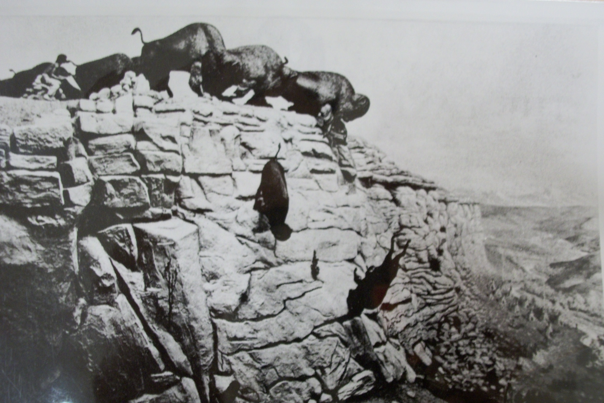
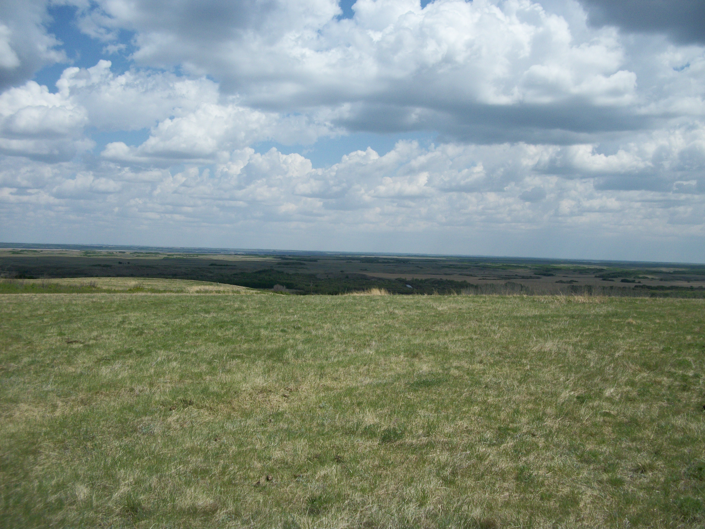
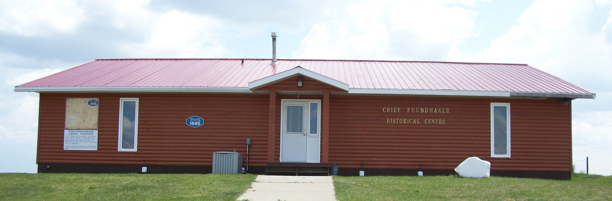

Background
|  |
|
Saskatchewan Archives Board S-B-4269 A diorama showing buffalo chased over a cliff. A group of teepees can be seen on a hillside in the background. Date range: 1880-1909 |
PRE-CONTACT: LIFE ON THE PLAINS
The Cree of the current Treaty Six region historically travelled great distances, for trade, diplomatic missions and for hunting. Maskipitoon, a great Plains Cree Chief was painted by artist George Catlin in 1833 while Maskipitoon was on a diplomatic mission to Washington D.C., this chief was also present at the Fort Laramie Treaty of 1851 between the United States and the northern Plains Tribes. The Cree also travelled to present day central North Dakota to the Mandans, Hidatsas and Arikara villages to attend trade fairs. Originally a market where where corn, beans, and squash were exchanged for meat and hides, these villages developed into an exchange centre for European goods and Plains produce as well and for guns and horses in particular. Assiniboines, Crees, Ojibways, Crows, Blackfeet, Flatheads, Nez Perces, Shoshones, Cheyennes, Arapahoes, Kiowas, Pawnees, Poncas and various Sioux bands all visited these trading villages (Galloway 302). Well established trading networks existed between the various First Nations. Hudson Bay company traders saw horses with brands that were probably Spanish in Cree-Assiniboine country in the 1750’s (Galloway 270).
 |
| Courtesy Allen Sapp Gallery |
The Cree inhabited the Plains region of western Canada along with other First Nations, those being the Blackfoot, Piegan, Sarcee, Blood, Saulteaux, Assiniboine and Sioux. Previously the Gros Ventres, Shoshones lived on the Canadian Plains but due to pressure from other Nations they moved to their current homes in Wyoming and Montana. (Ward 55). The Cree created an alliance with the Assiniboine and Saulteaux and eventually these nations dominated the plains in the Saskatchewan region. They battled with the Blackfeet and Sarcee, very often peace would reign as they would establish treaties and truces. All of these nations had the buffalo at the centre of their life and economy very similar to the role oil and fossil fuels play in modern life. The number of bison, or buffalo on the great Plains before the Europeans arrived has been estimated, conservatively, at 60 million. They ranged from Peace River in northern Alberta to Texas in the south, from the Appalachians in the east to the Rockies in the west. The First Nations utilized every aspect of the buffalo, its hide provided shelter and clothing. The hunt was of primary and spiritual importance to the First Nations and every aspect of the hunt was controlled by ritual and ceremony. (Ward 62). Despite the decline of the buffalo due to settler expansion and deliberate destruction, the First Nations culture and traditions survived, a testament to their durability and adaptability.
The First Nations had complex social, ritual and political structures. There were rules and codes of conduct that governed relationships in and between families, relatives, other bands within the Nation, and other Nations. Each band was autonomous and had its own governance structure. There were however influential leaders due to their wisdom and strength became recognized leaders of their people as a group. Leaders such as Starblanket, Mistawasis, Big Bear, Sweetgrass and Piapot were leaders and spokesmen of the Plains Cree at the time of the Treaties.
The Cree travelled far in their hunts, trading and for war, but always they returned home to the northern parklands. This region has many places named in Cree where an event of significance took place. The Cree knew their land intimately and each feature had a story connected to it. Some of these stories go back to the beginning of this world and the actions of the mythological being Wasakaychak, such as Sliding Hill on the on the Sweetgrass First Nation. On this hill in the distant past, it is told Wasakaychak slid down the hill and to this day you can see the marking of this deed. There are stories still told today in the homes and ceremonies of Cree people that tell of the Creation of the world and of humanity on this continent.
Other stories are more current and tell of a historical event. These stories as well as sacred stories were handed down by the elders to the younger people. The Cree believe that oral stories are more accurate than written stories as they are carefully passed down from generation to generation and are told with great precision. Storytellers memorize their stories. They repeat them many times over the course of their lifetimes in teaching circles and other ceremonies. Oral records are vital to the continuity of these cultures. Therefore, storytellers take great care and pride to ensure that these records remain accurate (Roberts 9).
FIRST NATIONS ORAL TRADITION: BROKEN KNIFE
|  |
One such story is the story of Broken Knife. There is a hill overlooking the Poundmaker Cree Nation, this hill is called Keskikoman Asawapimowin, or Broken Knife’s Lookout. A long time ago, the great Sarcee warrior Broken Knife and his party of warriors were defeated in battle at the base of this hill. Broken Knife had come east from present day Alberta, looking to steal horses from the Crees. Around present day Lloydminster they saw the clouds of dust and rumbling of the earth that told of a buffalo hunt going on in the distance, a distance of 80km. ( Leo Tootoosis 2010). They began walking to the area and spent the night at Wolf Dung Hills, south of Lloydminster. Early in the morning before dawn they came to the hill that would later bear his name. There was a fog and they could not see anything so Broken Knife sent his warriors down to the creek where they began to roast some buffalo meat. Broken Knife waited for the fog to lift so he could locate the Cree camp, and looked around with his spyglass. Tired, he fell asleep.
After a buffalo hunt, there are orphaned calves running about and 3 young Crees were hunting these calves, one of these young men was Sweetgrass. They spied a sleeping man on the hill and the two other raced back to the Cree camp to tell of impending trouble. Sweetgrass crept up to the sleeping man who suddenly awoke and sprang to his feet.
“ Awayina kiya/who are you ?” asked the young Cree.
“ Niya oma Keski-Koman/ I am Broken Knife” replied the Sarcee. Broken Knife spoke Cree as at that time it was common for people to speak other languages.
“ A kiche takosen/ you are a famous person. Because of this, I am going to give you a chance, run south and you and your warriors will escape safely, if you run north you will run into our camp”, the Cree warned.
Broken Knife ran to the camp where his 10 warriors were resting and eating. Quickly he told them of his encounter with the Cree and told of his advice. The other Sarcees were suspicious of the Crees advice to run south and suspected a trap, so they started running north and as they crested a hill they saw Cree horseman riding over the hills. They ran back to the creek and quickly dug a trench with their knives and hatchets. Very often First Nations as a tactic would dig trenches to fight. Surrounded, they fought all morning, finally the Cree rushed into the trench and in hand to hand combat killed all of the Sarcee. One of the Cree noticed that there were 11 bodies yet there had been 12 tracks coming down from the hill to the creek. The Cree searched all day for the missing Sarcee. The Sarcee has run into the creek and hid under water, using a reed he managed to breathe and evaded the searching Crees. When night fell he ran back to his people and told the tale of the death of Broken Knife.
How the Cree came to know the Sarcee side of the story is that, a long time ago when different First Nations met on the plains, a nation they might have been at war with, they did not always battle each other. Many times these warring nations would sit down in peace and smoke together. There, they would talk. One time the Crees and Sarcees met and they sat down together. The Sarcees asked, “Tell us of the time that Broken Knife was killed.”. The Crees did and ended their story by saying that one Sarcee did escape. A Sarcee warrior then stood up and said, ‘I am that man’ and he told his side of the story. That is how we came to know this story that we are now telling.
This story took place around 1840, how this was determined was that the elder who told this story, the late Jim Tootoosis, was told this story by his older brother Adam Tootoosis, who in turn was told this story around 1905 by an elder, Windwalker, was his name. Wind Walker had been a child during this battle and this is how they came upon the date of this battle. This story was told to Floyd Favel by the late Jim Tootoosis following traditional protocol, tobacco was offered for this story to be told and recorded.
This story is an example of the precision of oral tradition and in the telling of a historical event. In this story we are shown how a historical story was handed down from the distant past to the present time. In this story we get an insight into the lives of the First Nations at that time in history. It is the oral tradition of First Nations people that have kept their traditions, culture and language strong and dynamic to this day. These stories remind them of who they are and instill pride in their heritage.

Sources:
One Vast Winter Count – The Native American West before Lewis and Clark, Colin G. Calloway, University of Nebraska Press/Lincoln and London 2003
The People, Donald Ward. Fifth House Publishing 1995
First Nations, Inuit, and Metis Peoples-Exploring the Past, Present, and Future, John Roberts, Emond Montgomery Publications Limited, 2006
Voices of the Plains Cree, Edward Ahenakew, Canadian Plains Research Centre, 1995.
Personal interviews by Floyd Favel with Jim Tootoosis 1995 and Leo Tootoosis 2010.